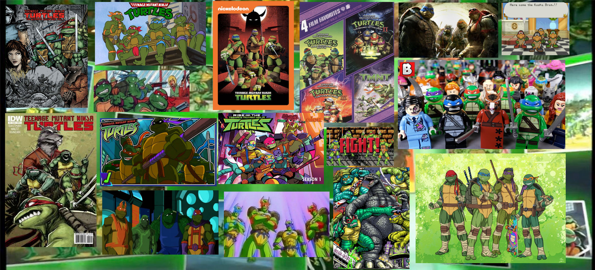
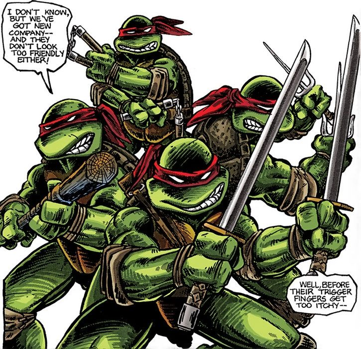
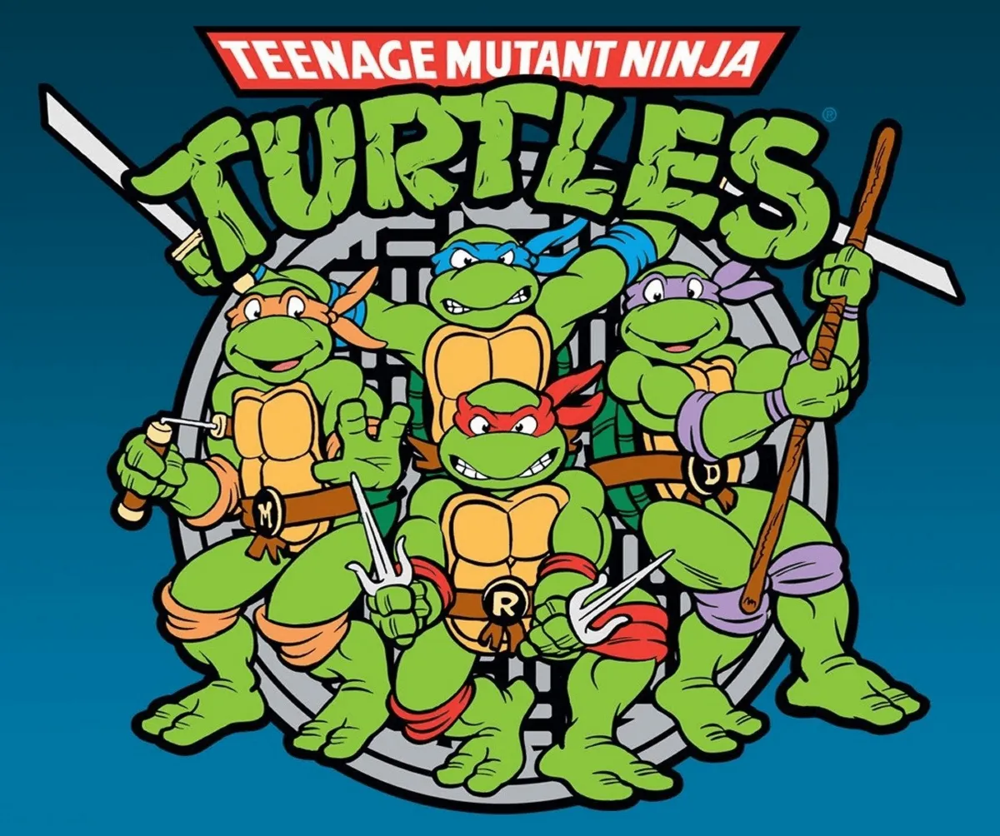
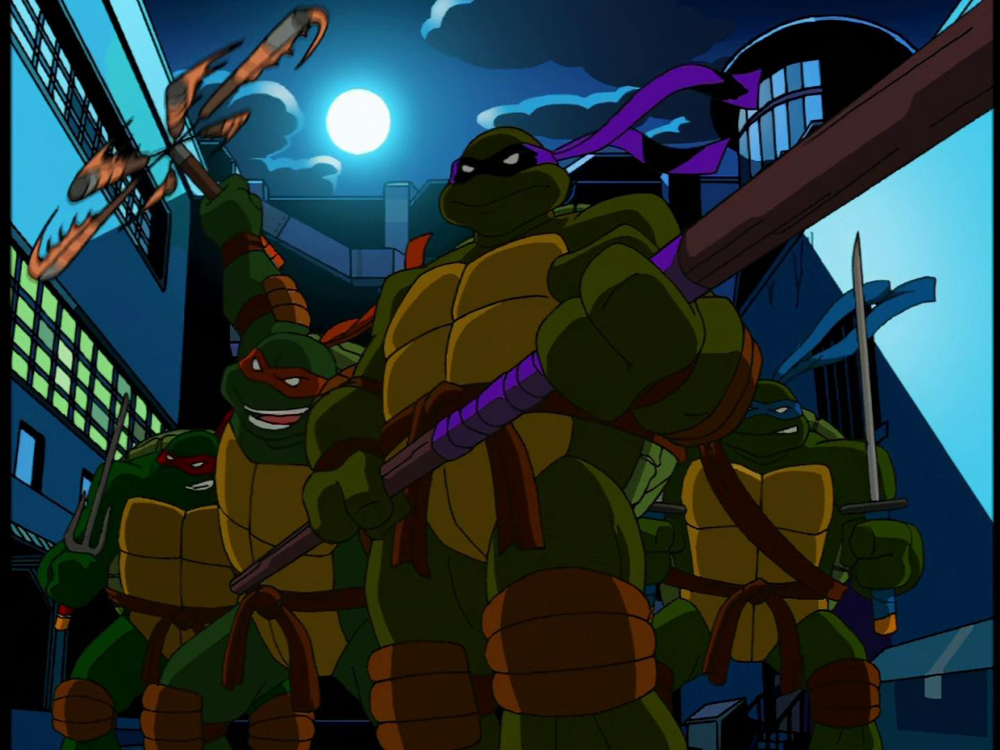
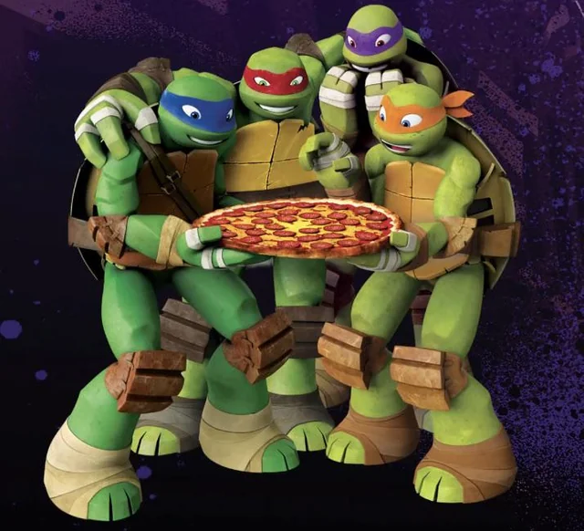
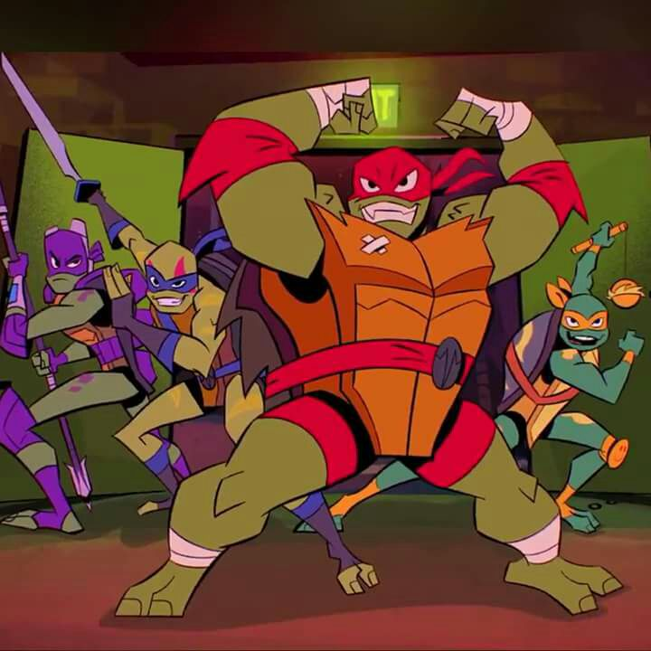
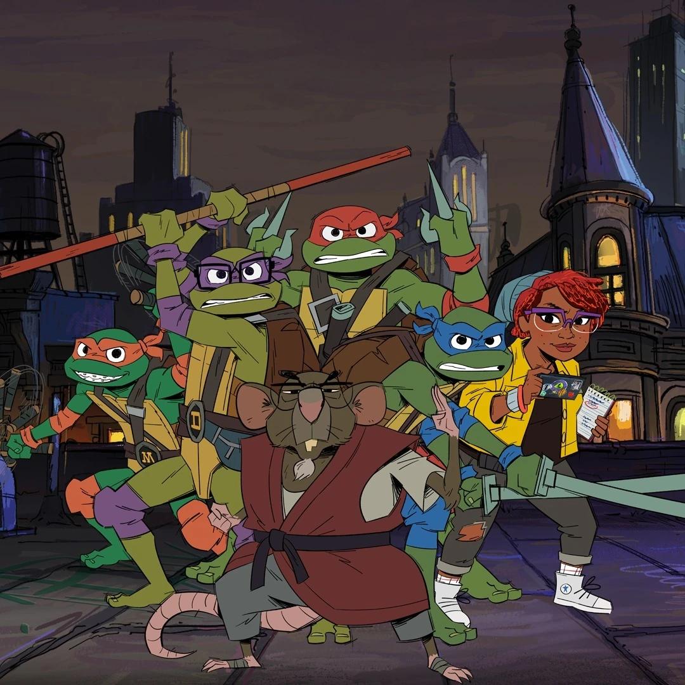

Mirage Cómics (1984)
Originalmente iba a ser un solo número, pero debido a la gran popularidad que tomó, se expandió

Las Ninja Tortugas
La primera serie animada que desató la tortugo-manía en los 90, y tuvo que volverse infantil porque Mirage era para mayores

Tortugas Ninja (2003)
Esta serie es una adaptación directa de los cómics de Mirage, se hizo porque a uno de los cradores nunca le gustó el humor del 87

Tortugas Ninja (2012)
Luego de años sin contenido, esta serie toma lo mejor del 2003 y 1984 y lo trae a la actualidad

El Ascenso de las Tortugas Ninja (2018)
La serie más distinta de las tortugas, con un formato infantil y episódico como Bob Esponja

Tortugas Ninja: Historias Mutantes (2024)
Esta serie consiste en historias cortas y modernas inspiradas en la serie de 1987